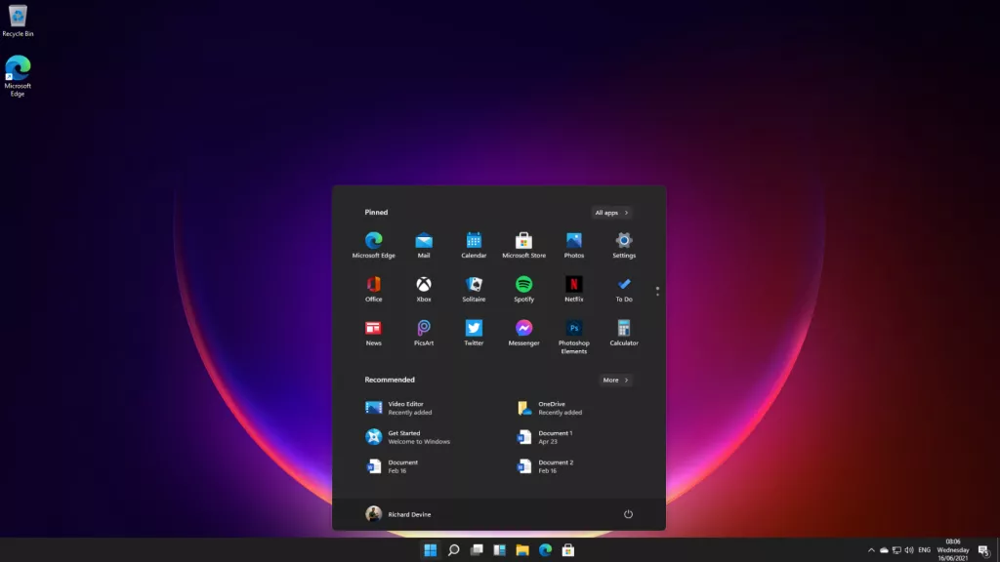
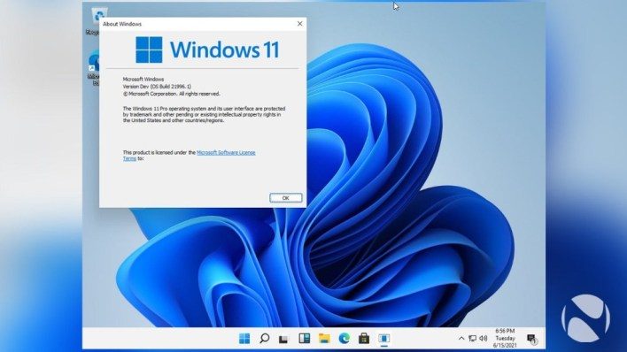
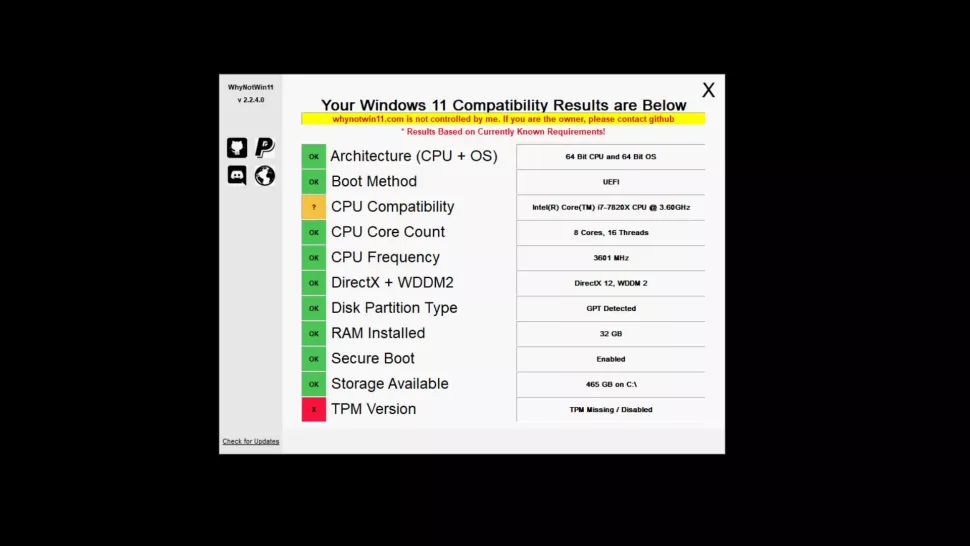
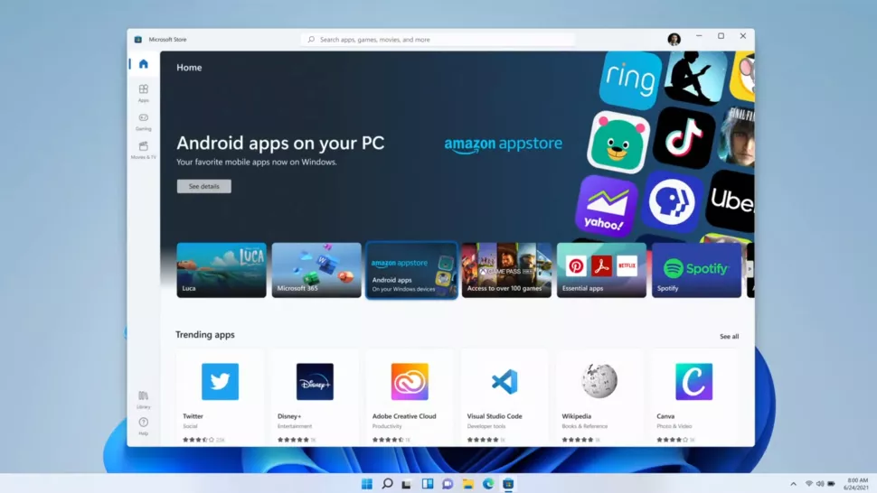

Windows 11 is official, with a new look and more after being unveiled at Microsoft's big event on June 24.
While an early build had leaked before this, spoiling the new look and the new name, we finally got to see all this in an official capacity, with the Insider Build being released soon after.
There has also been a big focus on the new Microsoft Store, with relaxed allowances and also the Amazon App Store coming to it as well, so you can download TikTok if you wish.
There's still some confusion as to the system requirements of what Windows 11 needs for your PC, mainly due to a component called TPM, but it looks as though Microsoft are looking into this.
With this in mind, here's everything we know about the release date, the new features, and more for Windows 11.
Cut to the chase
What is it? Windows 11 is the successor to Windows 10
When is it out? Likely late October
How much does it cost? Free
Windows 11 release date
Microsoft says Windows 11 will be out "this holiday season" – so likely sometime between late November and Christmas.
There is also going to be a yearly update of the new operating system, similar to Apple's efforts with macOS.
While Microsoft released a tool that allowed you to see if your desktop PC or laptop will be able to run Windows 11, it was confirmed to be buggy, giving erroneous results for machines that would have no problem in running the update.
However, another tool has been released which gives you much clearer detail for how eligible for PC is.
It looks as though Microsoft are hinting at a release for Windows 11 in October. Countless screenshots have the date of October 20, alongside messages that state how many are looking forward to "turning it up to 11 in October!"
Windows 11 hint of October release
Now that Microsoft have released the test build, named 22000.51 for Windows Insiders on the developer or beta channel, we have a handy guide in how to download it. Before you do though, the best point of call would be to make sure that your PC is enrolled for Microsoft's Insider Program first, as long as it meets the requirements. Be aware though, that we advise only to run it on a PC that's not your main machine, as there are plenty of small issues for now. Windows 11
There's been a lot of discussion as to which devices are eligible for Windows 11. Regardless of the TPM requirement, others are simply wondering if they need to look to upgrade their PC or laptop soon. For now, Microsoft have published the requirements for the update, but they are subject to change as we near release and the company take feedback on board.
Internet Connection and Microsoft Account
: Windows 11 Home requires an active internet connection and a Microsoft Account to complete initial, first-use setup of the operating system, or when switching a device out of Windows 11 Home in S-mode.
How much is Windows 11?
Windows 11 will be a free update for existing Windows users – you'll need to be online to download, install and activate Home versions, and you'll need to have a Microsoft account when installing it on or upgrading your PC or tablet.
So far Microsoft have released the hardware requirements for Windows 11, but there's confusion over TPM (Trusted Platform Module) and whether the company are pushing hard over the minimum threshold for which devices are eligible to be updated to the new version.
While we've got a handy explainer for you that goes into TPM, hardware vendors can still offer new machines with Windows 11 that won't need this requirement, albeit with good reason to.

There are improvements across the board in Windows 11, with Microsoft promising that updates will be 40% smaller, and touting Windows 11 as "the most secure release yet".
The taskbar is optimized for touch as well as mouse peripherals, and is now renamed the dock.
New multitasking features are also on offer thanks to a feature called Snap Layouts, which enables you to arrange multiple windows across the screen, not just side by side, but in columns, sections and more.
Another feature is Snap Groups, where you can go back to previously snapped windows from the dock, so for example you can go to your email app, Edge browser windows or anything else without having to snap them back to the previous view again.
There's also improved multi-monitor support, so when you reconnect an external monitor, Windows 11 remembers the previous positions of the windows that were on that monitor.
Windows 11

Teams is also integrated to the dock, so you can easily join in with meetings and family calls. This looks like the first inkling of Skype disappearing from Windows, especially with the Skype sounds being heard in the demo when a call was incoming.
The Microsoft Store is finally seeing a redesign, with better-curated content, and a better options for managing your purchased shows, such as mirroring them to your television. Apps such as Disney+, Adobe Creative Cloud, Pinterest and more are already in this redesigned store for Windows 11, ready to go.
WPA, EWP and Win32 apps are now all in the Microsoft Store, ready to go. If a developer has a commerce engine, they can keep 100% of the revenue brought from the Microsoft Store.
Android apps are also ready for Windows 11, discoverable from the Microsoft Store, via Amazon App Store, so you can download TikTok and more, ready to use on your PC or tablet.
The new store opens up possibilities for other applications to arrive in Windows 11, even Apple's iMessage, which could follow iTunes and Safari.
Windows 11
One of the biggest changes users will notice is that the Start menu has been moved to the center of the screen – and it's now "cloud powered", so it dynamically changes depending on the time of day, and the content you're working with.
Light Mode and Dark Mode are official, with rounded corners and a unified design across the operating system, with colorful wallpapers to choose from as well.
There are also some windows that look Aero-esque from Windows Vista, showing you bite-sized information.
Windows Widgets are back in Windows 11, accessible via the dock, with Microsoft touting AI-powered dynamic features that enable widgets, as with the Start menu, to change depending on the apps you're using and the time of day. On the touchscreen, you can slide from the left on the desktop to have widgets appear.
There are plenty to choose from, such as the weather, Bing maps, news, and more.
These will be available for third-parties as well, so you may see as many widgets available to pick as there are on Apple's iOS and iPadOS operating systems.
Gaming will be a much bigger focus in Windows 11, with the sluggish and frustrating-to-use Windows 10 Xbox app replaced by a new Game Pass app that enables you to buy, manage and remove games, making it easier for you to access and download games, from Doom Eternal to – soon – Halo Infinite.
HDR will also be supported on compatible machines, offering improved lighting and contrast for gaming and viewing media. Direct Storage is also here, with the main game assets able to be downloaded and installed, enabling you to play your games even faster than before.
Windows 11
Tablet mode has been one of Windows' weaker points ever since Windows 8, and the new tablet features that Microsoft showed off for Windows 11 could be key to the operating system's fortunes, especially with future Surface products in the pipeline from Microsoft – to have a new, numbered operating system for its upcoming tablets could be a big selling point for new users. At the event, Microsoft touted bigger touch targets and easier ways to move windows around, and better rotate optimizations, for example in how windows are rearranged, so you don't lose track of the applications you were using. Gestures used with the trackpad of the Surface models are also coming to the touchscreen, bringing in some familiarity here. Haptics is also coming to Windows 11 when you use a stylus for better feedback when drawing or sketching. The touch keyboard has also been redesigned, with a smaller keyboard just for your thumb, and emojis ready to be used. Microsoft says dictation will also be improved, alongside voice commands, with 'delete that' options and more.